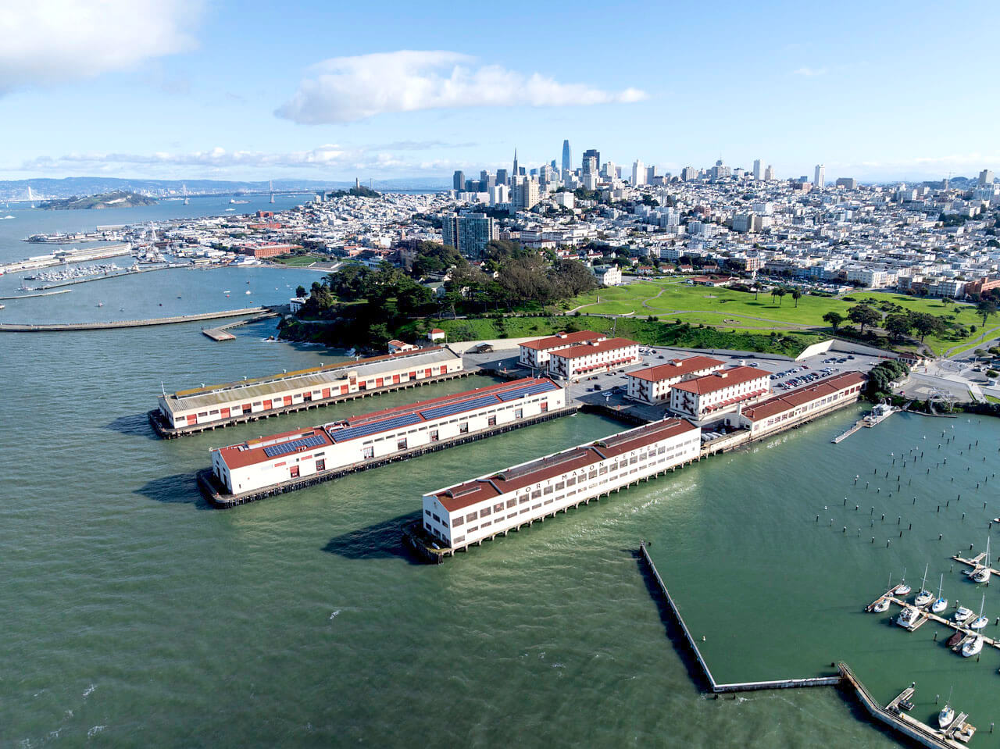

THE PLACE
See you
in San Francisco.
Fort Mason Center, Salesforce Tower & The Ameswell Hotel.
3월 16–19일, SF Bay Area에서 만나요.

PLAN YOUR VISIT
Fort Mason Center for Arts & Culture
샌프란시스코 북쪽 워터프런트, Aquatic Park와 Marina Green 사이에 위치한 문화 공간입니다. 행사장 세부 입구와 체크인 위치는 추후 안내합니다.
ADDRESS
2 Marina Boulevard
San Francisco, CA 94109
DATES
March 17—18, 2027
Summit & evening events
3D venue map
행사 배치 참고용 · 실제 운영 배치는 변경될 수 있습니다.
YOUR NEXT CHAPTER
Big ideas start
with a hello.
2027년 3월, 샌프란시스코에서 만나요.